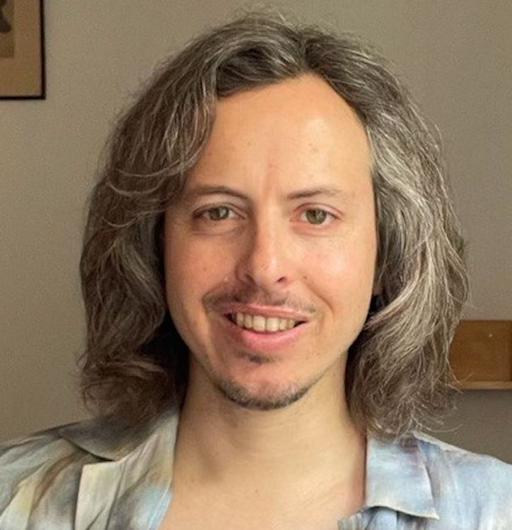

Gilad Landau
DPhil Candidate · Engineering Science, University of Oxford (Jesus College)
About me
I build non-invasive brain-to-text systems by aligning neural signals (MEG/EEG/OPM) to large-scale language representations. I’m part of the PNPL at Oxford, supervised by Oiwi Parker-Jones. My research focuses on semantic representations in the brain and how we can harness them for accessible, robust BCIs.
Highlights
Recent Publications
Contact
Get in touch
Email: gilad.landau@eng.ox.ac.uk
Office: PNPL Lab, Department of Engineering Science, Parks Road, Oxford